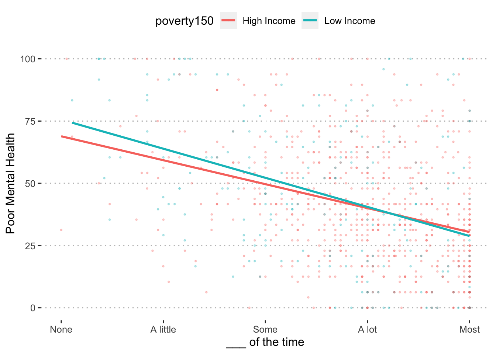
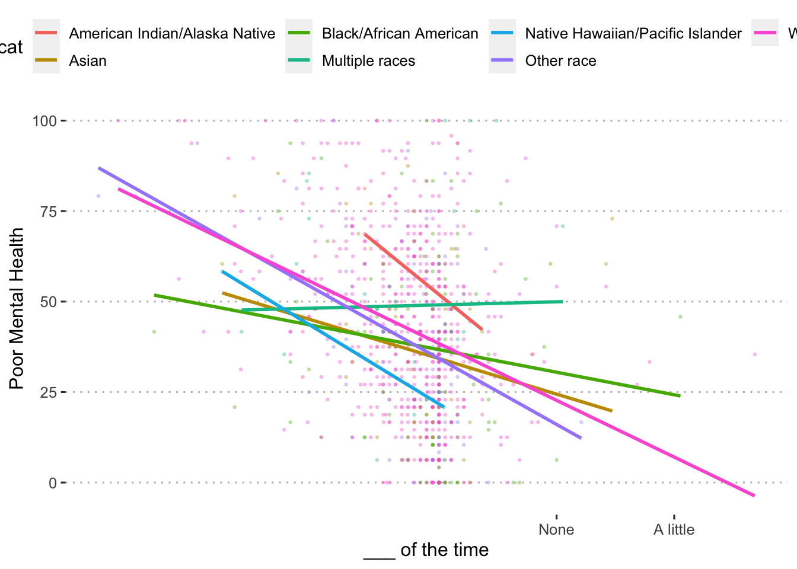
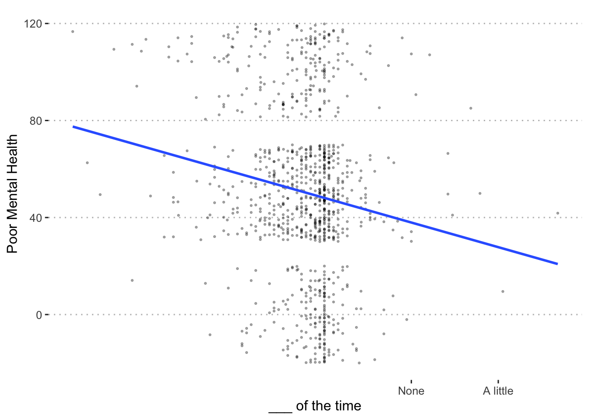
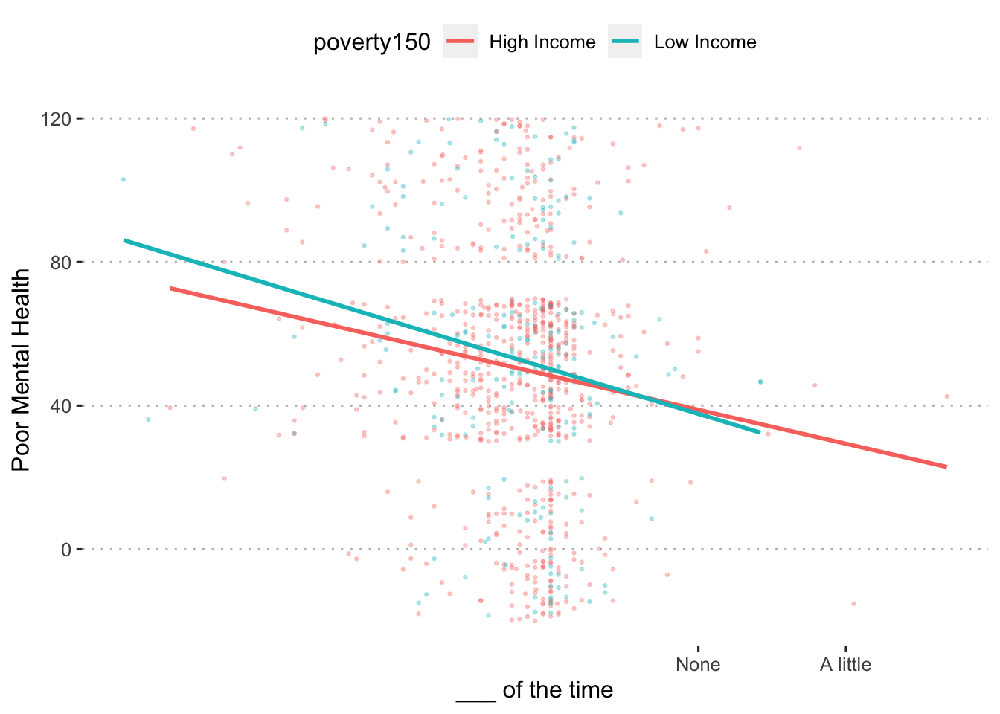
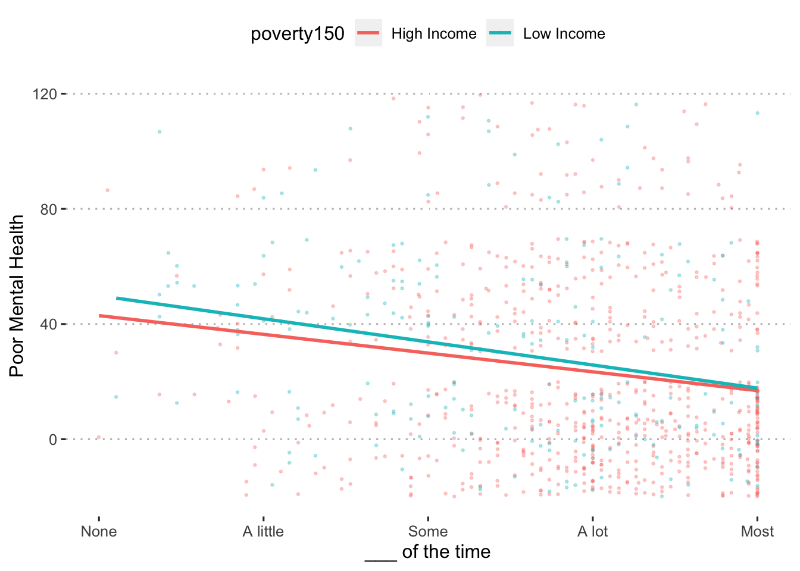
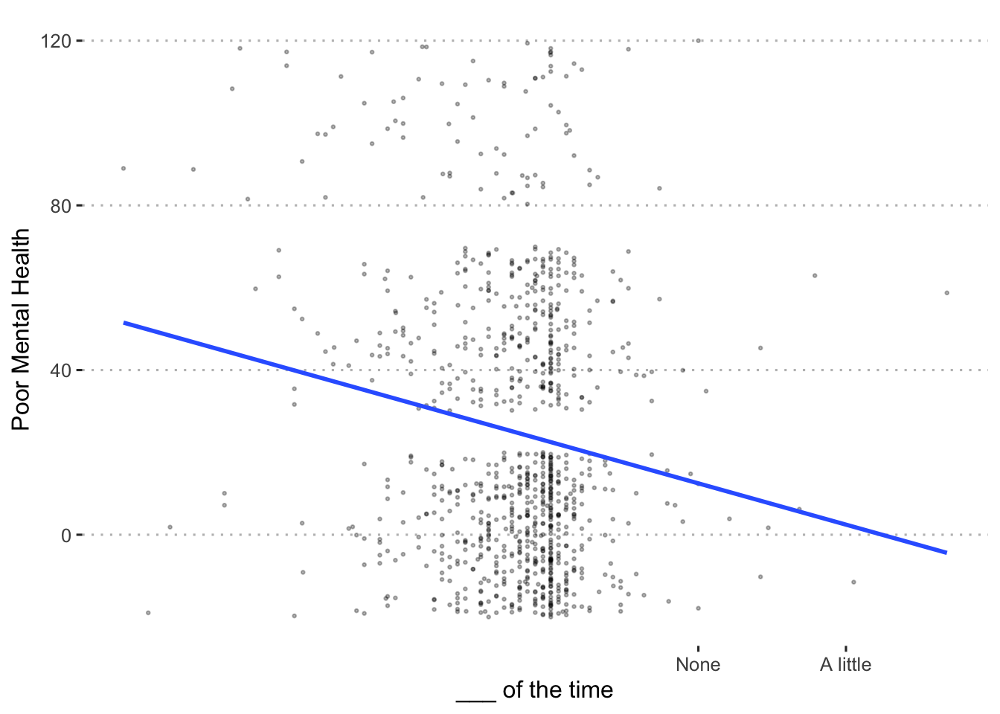
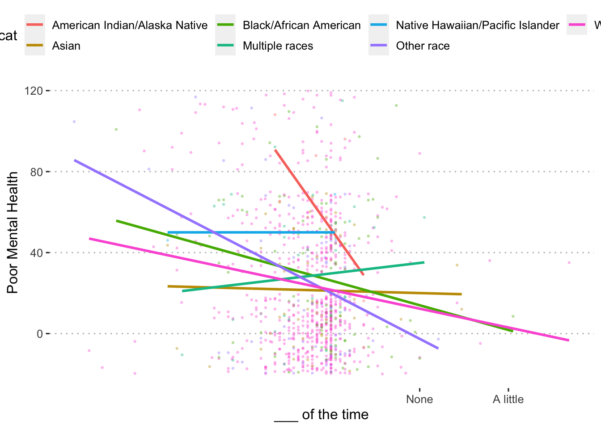

Social support
Change in social support

Caregiver Wellbeing
Overall
$plot $summary
$summary
| term | estimate | std.error | statistic | p.value |
|---|---|---|---|---|
| (Intercept) | 38.06 | 0.85 | 44.79 | < .001 |
| change.support | -13.85 | 1.46 | -9.50 | < .001 |
Income
$plot $summary| term | estimate | std.error | statistic | p.value |
|---|---|---|---|---|
| (Intercept) | 36.75 | 1.00 | 36.68 | < .001 |
| poverty150Low Income | 6.55 | 2.07 | 3.16 | .002 |
| change.support | -14.59 | 1.70 | -8.57 | < .001 |
| poverty150Low Income:change.support | 3.19 | 3.46 | 0.92 | .356 |
Race/ethnicity
$plot  $summary| term | estimate | std.error | statistic | p.value |
|---|---|---|---|---|
| (Intercept) | 51.96 | 8.66 | 6.00 | < .001 |
| race_cat2 | -17.69 | 9.30 | -1.90 | .058 |
| race_cat3 | -15.25 | 9.01 | -1.69 | .091 |
| race_cat4 | -2.87 | 9.89 | -0.29 | .772 |
| race_cat5 | -30.25 | 24.93 | -1.21 | .225 |
| race_cat6 | -17.70 | 9.15 | -1.93 | .053 |
| race_cat7 | -13.56 | 8.72 | -1.55 | .120 |
| change.support | -26.39 | 24.85 | -1.06 | .289 |
| race_cat2:change.support | 16.54 | 25.51 | 0.65 | .517 |
| race_cat3:change.support | 20.16 | 25.17 | 0.80 | .423 |
| race_cat4:change.support | 27.24 | 25.90 | 1.05 | .293 |
| race_cat5:change.support | 6.50 | 30.65 | 0.21 | .832 |
| race_cat6:change.support | 8.18 | 25.29 | 0.32 | .747 |
| race_cat7:change.support | 10.70 | 24.92 | 0.43 | .668 |
Child Externalizing
Overall
$plot  $summary| term | estimate | std.error | statistic | p.value |
|---|---|---|---|---|
| (Intercept) | 48.10 | 1.16 | 41.51 | < .001 |
| change.support | -10.16 | 1.99 | -5.11 | < .001 |
Income
$plot  $summary| term | estimate | std.error | statistic | p.value |
|---|---|---|---|---|
| (Intercept) | 48.31 | 1.36 | 35.58 | < .001 |
| poverty150Low Income | 1.82 | 2.80 | 0.65 | .515 |
| change.support | -9.46 | 2.31 | -4.10 | < .001 |
| poverty150Low Income:change.support | -2.96 | 4.69 | -0.63 | .528 |
Race/ethnicity
$plot  $summary| term | estimate | std.error | statistic | p.value |
|---|---|---|---|---|
| (Intercept) | 47.86 | 11.67 | 4.10 | < .001 |
| race_cat2 | -12.40 | 12.54 | -0.99 | .323 |
| race_cat3 | 1.89 | 12.14 | 0.16 | .876 |
| race_cat4 | 8.36 | 13.33 | 0.63 | .531 |
| race_cat5 | -46.69 | 33.60 | -1.39 | .165 |
| race_cat6 | -7.64 | 12.33 | -0.62 | .536 |
| race_cat7 | 2.62 | 11.76 | 0.22 | .824 |
| change.support | -29.02 | 33.50 | -0.87 | .387 |
| race_cat2:change.support | 18.96 | 34.39 | 0.55 | .582 |
| race_cat3:change.support | 15.54 | 33.93 | 0.46 | .647 |
| race_cat4:change.support | 28.91 | 34.91 | 0.83 | .408 |
| race_cat5:change.support | 2.51 | 41.32 | 0.06 | .952 |
| race_cat6:change.support | 11.45 | 34.09 | 0.34 | .737 |
| race_cat7:change.support | 20.18 | 33.59 | 0.60 | .548 |
Child Internalizing
Overall
$plot  $summary| term | estimate | std.error | statistic | p.value |
|---|---|---|---|---|
| (Intercept) | 22.50 | 1.14 | 19.71 | < .001 |
| change.support | -10.02 | 1.96 | -5.12 | < .001 |
Income
$plot $summary| term | estimate | std.error | statistic | p.value |
|---|---|---|---|---|
| (Intercept) | 21.00 | 1.33 | 15.75 | < .001 |
| poverty150Low Income | 6.88 | 2.75 | 2.50 | .013 |
| change.support | -10.61 | 2.26 | -4.69 | < .001 |
| poverty150Low Income:change.support | 3.61 | 4.60 | 0.78 | .434 |
Race/ethnicity
$plot  $summary| term | estimate | std.error | statistic | p.value |
|---|---|---|---|---|
| (Intercept) | 51.68 | 11.44 | 4.52 | < .001 |
| race_cat2 | -30.49 | 12.30 | -2.48 | .013 |
| race_cat3 | -25.47 | 11.91 | -2.14 | .033 |
| race_cat4 | -21.97 | 13.07 | -1.68 | .093 |
| race_cat5 | -1.68 | 32.96 | -0.05 | .959 |
| race_cat6 | -31.60 | 12.10 | -2.61 | .009 |
| race_cat7 | -30.08 | 11.53 | -2.61 | .009 |
| change.support | -61.94 | 32.86 | -1.89 | .060 |
| race_cat2:change.support | 60.77 | 33.73 | 1.80 | .072 |
| race_cat3:change.support | 49.73 | 33.28 | 1.49 | .135 |
| race_cat4:change.support | 67.13 | 34.24 | 1.96 | .050 |
| race_cat5:change.support | 61.94 | 40.53 | 1.53 | .127 |
| race_cat6:change.support | 39.28 | 33.44 | 1.17 | .241 |
| race_cat7:change.support | 52.65 | 32.95 | 1.60 | .110 |